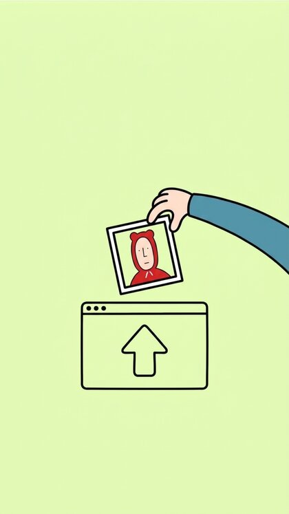
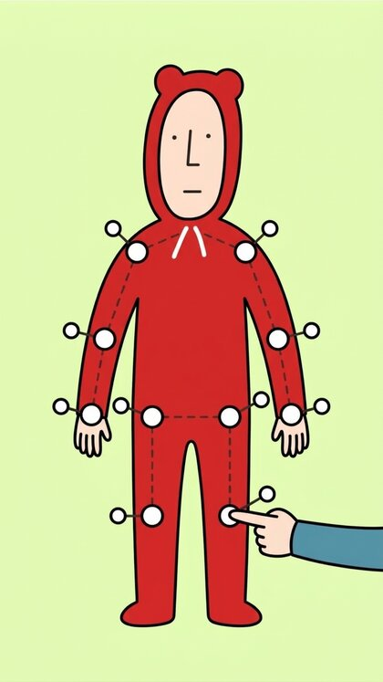
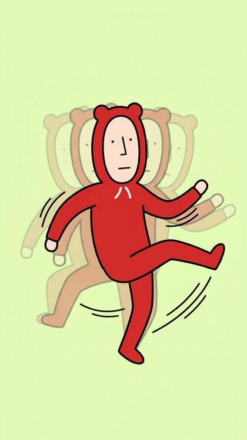
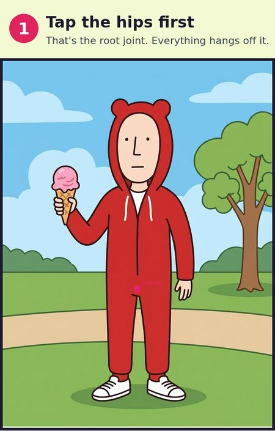
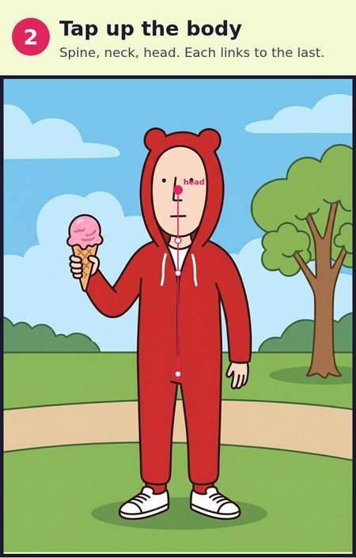
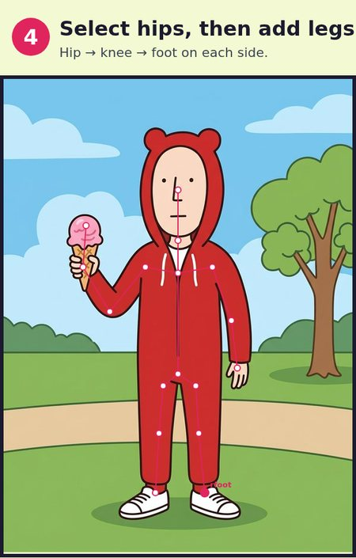
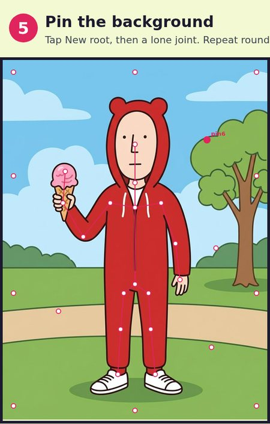
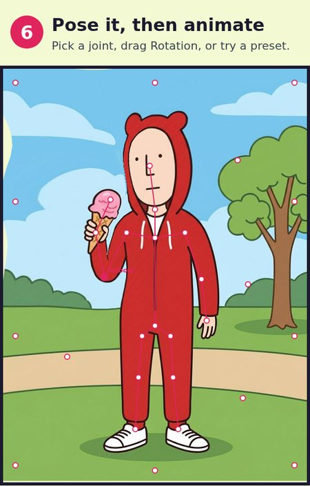

01
Start with a drawing.
Upload your character or choose a built-in demo. A plain or transparent background is the easiest place to start.
A little code. A little character. A lot more feeling.
Give your AI agent the tools to make something
that refuses to blend in.
Meet the cloud. Original artwork, real joints, fresh keyframes.
This isn't a screenshot of what you could build. You're already playing with it. Rigpop's actual skinning engine turns drawings into living website characters.
Take the renderer, the design playbook, and the recipes. Give them to your coding agent. Build something with a pulse.
Read the agent playbook ↗The actual Rigpop renderer, extracted for the web. Forward kinematics. Weighted mesh skinning. No video tricks.
02 / THE WORKSHOP ↗Open your original editor. Upload art, place joints, create motion. Start with the built-in demos or make something new.
03 / THE RECIPE ↗One art-directed world, one moving subject, one clear interaction. A real recipe for agents—not “make it pop.”
Ten original AI-generated illustrations, cut out, rigged and brought to life with fresh keyframes. Pick a personality and remix it below.
Generated artwork in the illustrated tutorial style. Animations use Rigpop's real mesh deformation. Reduced motion shows still poses.
Choose one of the new characters, or upload your own drawing. Edit joints, try walking, jumping and more, and export an image-embedded Rigpop project. Everything stays in your browser.
Start at the hips. Add the spine, then select a parent before branching into arms and legs. Editing pauses at rest. Walk/run work best with a hip root, spine, and separate left/right arm and leg chains. Uploaded rigs stay in the character menu for this session. Export to keep them. Transparent PNGs work best; backgrounds are not removed automatically.
Loading workshop…
No animation degree required. Follow the same illustrated walkthrough from Rigpop, then try it in the real editor.
Open the workshop ↗
Upload your character or choose a built-in demo. A plain or transparent background is the easiest place to start.

Place the root at the hips, then build out the spine and limbs. Put a joint wherever your character should bend.

Try a motion preset, adjust a pose, or edit keyframes. Keep the movement small at first, then make it yours.
Small moves. Big personality. Place joints at the bends. Keep torso rotations gentle. If you're keeping the background, pin the scenery so it doesn't dance along.
Six illustrated steps using the ice-cream scene from Rigpop. Tap any image to open it full-size in a new tab.
Try the Ice cream demo ↗
The root joint anchors the body. Start at the hips.

Add spine, neck, then head. Each joint links to the last.
Select the spine. Add shoulder → elbow → hand on each side.

Select the hips. Add hip → knee → foot on each side.

Use New root to add lone joints around background edges and props.

Select a joint and try its rotation. Then choose a preset and watch the loop.
No API key. No runtime dependencies. Just a point of view.
Read AGENTS.md and docs/SCENE_RECIPE.md. Build an expressive website for [my idea and audience]. Use the Rigpop player and original art direction where appropriate. Implement real interactions, preserve reduced-motion and keyboard support, and inspect mobile and desktop screenshots. Do not simply copy this demo.